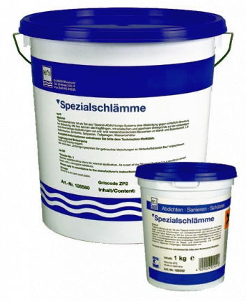
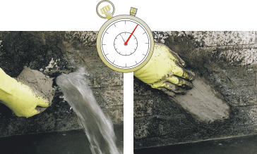
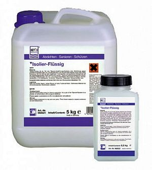

Гидроизоляция подвала изнутри
1. Гидроизоляция подвала изнутри по Специальной системе Аквастоп
Отличительной особенностью этого способа является возможность проведения гидроизоляции подвалов изнутри для конструкций, покрытых землей или водой, при наличии текущей напорной воды под давлением и при этом не требуется спуск грунтовых вод. Способ обеспечивает быстрое, всего за пять рабочих операций, получение надежной и долговременной гидроизоляции подвала изнутри от воды, воздействующей снаружи.
Специальная система Аквастоп успешно прошла многократные проверки и испытания и получила превосходные оценки. С ее помощью, например, был выполнен ремонт и гидроизоляция ствола шахты ОАО «Североникель» до отметки «-400 м», гидроизоляция подвалов Храма Феодоровской иконы Божией матери на Миргородской ул. в г. Санкт-Петербург, гидроизоляция шахты Комбината «Апатиты», г. Апатиты и др.
В системе используется только три материала:
- Специальный шлам,
- Пудер-Экс и
- Окремнитель изоляционный.
На подготовленное основание щеткой наносится первый слой Специального шлама, немедленно в этот слой втирается слой Пудер-Экс, а на слой Пудер-Экс немедленно кистью наносится жидкий Окремнитель изоляционный для получения абсолютной водонепроницаемости. Затем, щеткой немедленно наносятся еще два слоя Специального шлама, но уже с перерывом 15-20 минут. Общая толщина получаемого покрытия не превышает трех миллиметров. Нанесённая на пол Специальная система Аквастопп должна быть защищена стяжкой. Для предотвращения запотевания рекомендуется использовать Санирующие штукатурки и материал Щприцбевурф в качестве промежуточного адгезионного слоя. Система очень эффективна и универсальна в применении, однако ее основным назначением все-таки являются самые сложные случаи, когда в помещении имеются «плачущие» стены, множественные течи с напорной водой и невозможно сделать дренаж или откопать фундамент с внешней стороны.
Компоненты Специальной системы Аквастопп
1. Специальный шлам
Порошок на цементной основе с неорганическими добавками.

Специальный шлам является одной из компонент Специальной системой Аквастоп. Он предназначен для защиты от воды, воздействующей на строительную конструкцию без давления и под высоким давлением. Применяется для гидроизоляции подвалов изнутри, а также помещений, находящихся ниже уровня земли или воды в области стен и пола, как-то: подвалы, подвальные строения, колодцы, туннели, плотины, подземные гаражи, водные резервуары. Этим шламом можно покрывать все устойчивые минеральные, свободные от гипса основания на стороне постройки, не обращенной к воздействию воды. Средство устойчиво к морозу и солям оттаивания.Наносится Специальный шлам при помощи щётки или кисти.
Расход
В зависимости от назначения. Примерно 1,5 кг/м2 (0,5 кг/м2/слой)
Форма поставки
В ведрах по 15 кг и 5 кг.
2. Закрепитель Пудер-Экс
Сухая гидроизоляционная смесь на основе цемента, которая твердеет через несколько секунд после контакта с водой.

Закрепитель Пудэр Экс предназначен для быстрого и надёжного устранения течей и прорывов воды в бетоне, кирпичной и каменной кладке, в подвалах, подземных гаражах, туннелях, плотинах, канализации, очистных сооружениях, бетонных трубах, шахтах лифта, портовых сооружениях, шлюзах, трубопроводах (как сопутствующая мера), бункерах, штольнях, подземных переходах и на всех объектах, где гидроизоляция с внешней стороны невозможна.Мгновенно останавливает прорывы воды. После застывания устойчив к морозу, солям оттаивания, внешним климатическим воздействиям и водонепроницаем на долгое время.
Наносится на место течи в ручную при помощи гладкой (не ребристой) перчатки. В Специальной системе Аквастоп используется в качестве второго слоя и наносится после Специального шлама.
Расход
Для устранения протечки - используется необходимое количество материала.
В Специальной системе Аквастоп - около-1,5 кг/м2.
Форма поставки
Банка 1 кг, ведро 5 кг, ведро 15 кг.
Посмотреть видео "Закрепитель Пудер-Экс"
3. Окремнитель изоляционный
Модифицированный, не содержащий растворителя, дисиликатный раствор с высокоэффективными связывающими веществами.

Окремнитель изоляционный применяется в составе Специальной системы Aquastopp после нанесения на основу слоя Специального шлама и слоя Закрепителя Пудэр Экс. Является одной из компонент Специальной системы Аквастоп. Обеспечивает гидроизоляцию подвалов от воды без давления и под высоким давлением на внутренней стороне подвала (стены, полы), находящихся ниже уровня земли или воды, а также гидроизоляцию изнутри для шахт, туннелей, плотин, подземных гаражей, резервуаров для воды.В капиллярах покрываемой основы вступает в реакцию с отвердителями, содержащимися в средствах Закрепитель Пудэр Экс и Специальный шлам и образует высокопрочный смешанный силикат. За счет этого происходит фиксация гидроизолирующего слоя внутри основы. Средство устойчиво к морозу и солям оттаивания.
Наносится Окремнитель изоляционный кистью, щёткой, распылителем.
Расход
Примерно 0,5 кг/м2.
Форма поставки
В канистрах по 5 кг и 10 кг.
2. Гидроизоляция подвала изнутри Эластичным Серым шламом К11
 Гидроизоляционное покрытие, образуемое Эластичным Серым шламом К11, обладает исключительно сильным сцеплением с основанием (1,6 Н/мм2), что делает возможным его нанесение не только на внешнюю, но и на внутренюю поверхность подвала или фундамента. При этом обязательным условием является отсутствие напорной воды в течение не менее 48 часов после нанесения шлама.
Гидроизоляционное покрытие, образуемое Эластичным Серым шламом К11, обладает исключительно сильным сцеплением с основанием (1,6 Н/мм2), что делает возможным его нанесение не только на внешнюю, но и на внутренюю поверхность подвала или фундамента. При этом обязательным условием является отсутствие напорной воды в течение не менее 48 часов после нанесения шлама.
За это время покрытие набирает необходимую прочность сцепления с основой и в дальнейшем обеспечивает надежную, долгосрочную гидроизоляцию подвалов, гидроизоляцию стен подвалов и фундаментов от напорной воды, воздействующей с наружной стороны строительной конструкции (о технологии нанесения Эластичного Серого шлама К11).
3. Гидроизоляция подвала изнутри Эластичным шламом Ардалон 2К плюс
Подобно Эластичному Серому шламу К11 гидроизоляционное покрытие на основе Эластичного Шлама Ардалон 2К плюс обладает очень сильным сцеплением с основанием, что позволяет наносить его на внутреннюю поверхность подвала или фундамента. При этом обязательным условием является отсутствие напорной воды в течение не менее 48 часов после нанесения шлама.
За это время он набирает необходимую прочность сцепления с основой и в дальнейшем обеспечивает надежную, долгосрочную гидроизоляцию подвалов и фундаментов от напорной воды, воздействующей с наружной стороны строительной конструкции. После схватывания шлам Ардалон 2К плюс становится эластичным и устойчивым к образованию трещин до 2,0 мм, приобретает водоотталкивающие свойства.